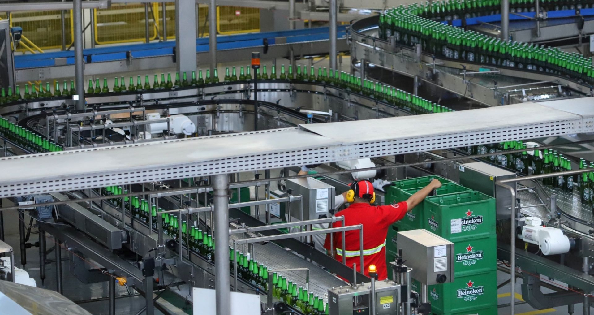
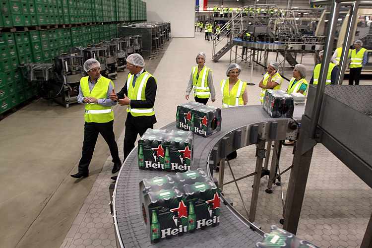

foi projetada com tecnologia de ponta desde o início, o que a torna uma das fábricas mais modernas do Brasil. Desde sua concepção, a fábrica incorporou sistemas automatizados e processos inovadores que garantem eficiência e qualidade na produção.
A instalação utiliza equipamentos de última geração para controle de temperatura e fermentação, permitindo um monitoramento preciso e uma melhor qualidade do produto final. Além disso, a fábrica conta com tecnologias de filtragem e tratamento de água, contribuindo para a sustentabilidade e redução do consumo hídrico.
destaque é o uso de energias renováveis e a implementação de práticas de economia circular, como a reciclagem de resíduos e a reutilização de materiais. Essa abordagem não apenas reduz a pegada ambiental, mas também melhora a eficiência operacional.
Como uma fábrica relativamente nova, a unidade de Ponta Grossa tem a vantagem de estar sempre atualizada com as inovações mais recentes do setor, o que a coloca na vanguarda da produção de cerveja no Brasil. Essa busca constante por melhorias e inovações é um reflexo do compromisso da Heineken com a sustentabilidade e a qualidade.